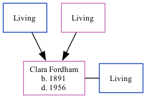

Clara Louisa Hitch (née Fordham) 1891 - 1956
[ Home ] | [ Calendar ] | [ Surnames Index ] | [ Family History ]The child of William Fordham and Mary Baker, Clara Fordham was born in St Peters, Thanet, Kent, England in 18911,2,3,4,5. She married Joseph Hitch in Thanet, Kent, England around Aug 19116.
Throughout her life, Clara lived in several places: at Reading Street, St Peters in Thanet on Apr 5, 18917; in Staple, Kent in 19012; and St Lawrence in Thanet on Apr 2, 19113.
She died in 1956 in Thanet4 (apr/May/Jun).
Parents
- William Henry
- Mary Ann Elizabeth
Citations
- 1891 England Census Online publication - Provo, UT, USA: The Generations Network, Inc., 2005.Original data - Census Returns of England and Wales, 1891. Kew, Surrey, England: The National Archives of the UK (TNA): Public Record Office (PRO), 1891. Data imaged from The National
- 1901 England Census Online publication - Provo, UT, USA: The Generations Network, Inc., 2005.Original data - Census Returns of England and Wales, 1901. Kew, Surrey, England: The National Archives of the UK (TNA): Public Record Office (PRO), 1901. Data imaged from the National
- 1911 England Census Online publication - Provo, UT, USA: Ancestry.com Operations, Inc., 2011.Original data - Census Returns of England and Wales, 1911. Kew, Surrey, England: The National Archives of the UK (TNA), 1911. Data imaged from the National Archives, London, England.
- England & Wales, Death Index: 1984-2005 Online publication - Provo, UT, USA: The Generations Network, Inc., 2007.Original data - General Register Office. England and Wales Civil Registration Indexes. London, England: General Register Office. © Crown copyright. Published by permission of the Cont
- England & Wales, FreeBMD Birth Index, 1837-1915 Online publication - Provo, UT, USA: The Generations Network, Inc., 2006.Original data - General Register Office. England and Wales Civil Registration Indexes. London, England: General Register Office. © Crown copyright. Published by permission of the Cont
- England & Wales Marriages 1837-2005 - Findmypast
- 1891 England, Wales & Scotland Census - Findmypast (was age 0 and the daughter of the head of the household)
Media
England & Wales marriages 1837-2008 - BMD/M/1911/3/AZ/000337/089
Family Tree
Generated by Ged2Site. Last updated on Jul 20, 2025